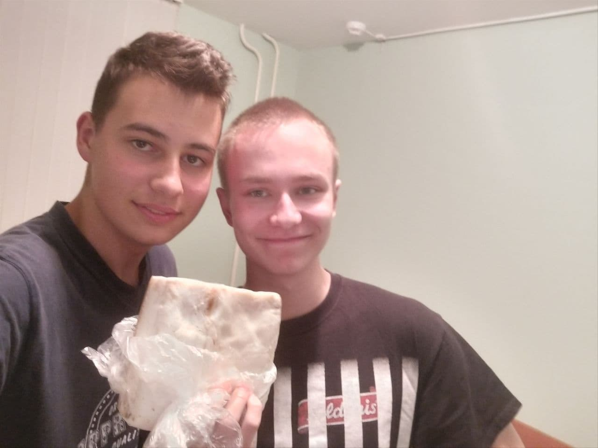

|  | Вова СыромятниковБратик, сосед, душа компании и не только. Всегда привозит из дома много вкусной еды (пример на фото!). Староста этажа - как видите, не последний человек в этом городе. Любит играть в компуктер на парах и спать. Еще ходит в качалку, поэтому его нужно бояться. В здоровом Вовке - здоровый дух!!! |